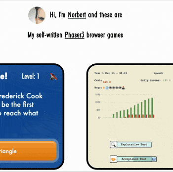

How to walk any page
Variant 1 via browser console
Open the page you want to walk in your browser. For example: https://ngraf.github.io
Open the dev tools in your browser. In Chrome for example, you can do this by right-clicking on the page and selecting "Inspect" or by pressing Ctrl + Shift + I (Windows/Linux) or Cmd + Option + I (Mac). Then go to the "Console" tab.
Copy and paste the following code into the console and press Enter:
Copy to clipboard
var style = document.createElement('style');
style.innerHTML = `
canvas {
z-index: 10;
position: absolute;
top: 0;
left: 0;
}
`;
document.head.appendChild(style);
var script = document.createElement('script');
script.src = 'https://ngraf.github.io/walk-the-page/index.b7a05eb9.js';
script.defer = true;
document.body.appendChild(script);
Press Enter.
And off you go. Have fun!
Variant 2 via browser bookmarklet
Create a new bookmark in your browser with this content:
Copy to clipboard
javascript:(function() {
var style = document.createElement('style');
style.innerHTML = `
canvas {
z-index: 10;
position: absolute;
top: 0;
left: 0;
}
`;
document.head.appendChild(style);
var script = document.createElement('script');
script.src = 'https://ngraf.github.io/walk-the-page/index.b7a05eb9.js';
script.defer = true;
document.body.appendChild(script);
})();
Open the page you want to walk in your browser. For example: https://ngraf.github.io
Press the bookmark you just created.
And off you go. Have fun!
Variant 3 - Walk this page
Click here